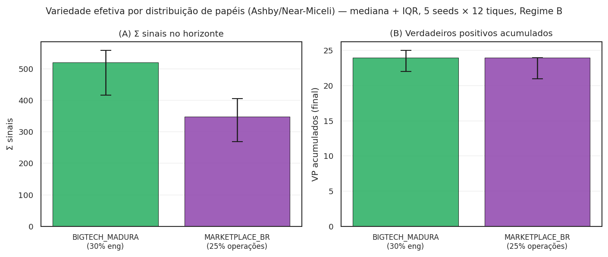
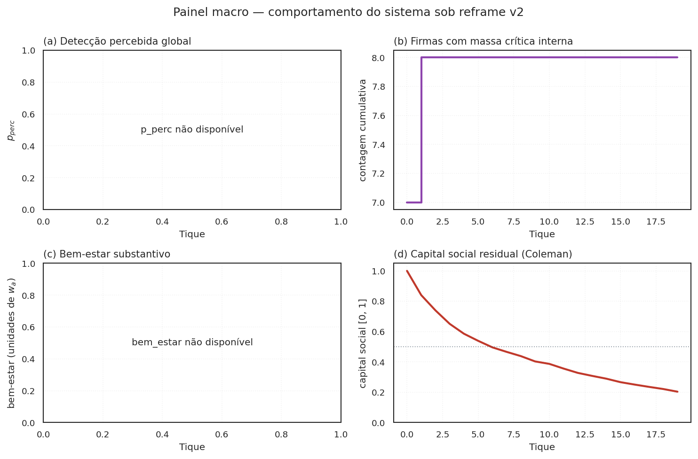
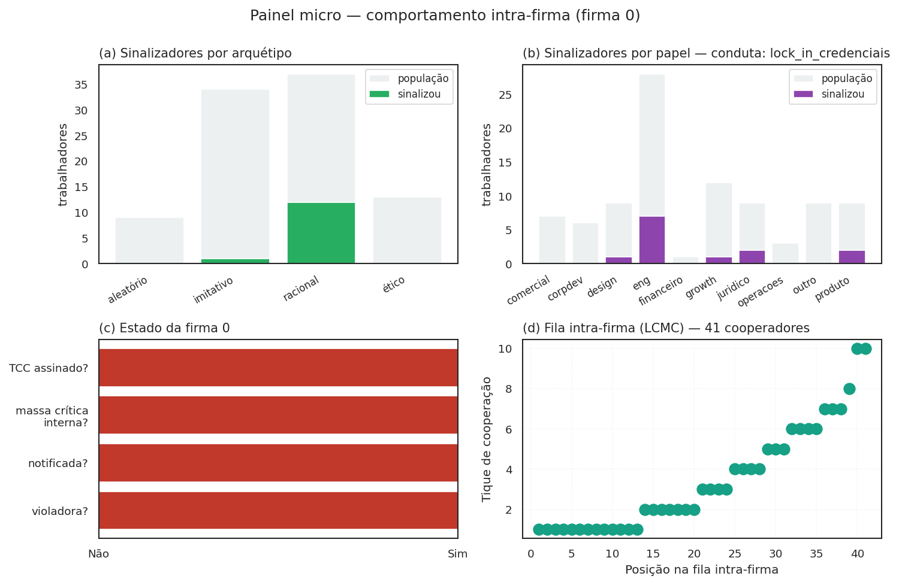

Modelagem multiagente¶
Esta página consolida, em um único lugar, como o modelo é composto agente a agente: classes, estados, decisões, microfundamentos, acoplamentos. É complemento técnico ao Ato 2 (mecanismo) e ao protocolo ODD — aqui o foco está na arquitetura computacional da simulação, não na intuição econômica nem na descrição padrão JASSS.
A simulação roda em Mesa 3.x, com três classes de agente, uma rede
intra-firma em NetworkX (Watts-Strogatz pequeno-mundo) e topologia
inter-firma implícita (acoplamento por p_perc global). Tudo opt-in
pode ser ligado/desligado por flag em WaaSParametros — backward compat é
invariante de projeto.
As três classes canônicas de agente¶
| Classe | Cardinalidade típica | Decisão central | Arquivo |
|---|---|---|---|
TrabalhadorAgent |
\(N_\text{empresas} \times \overline{n}_\text{firm}\) (centenas a milhares) | sinalizar ou calar | src/waas_antitrust/agents.py:24 |
EmpresaAgent |
\(N_\text{empresas}\) (dezenas) | pagar recompensa ou não | src/waas_antitrust/agents.py:206 |
AutoridadeAgent |
1 (CADE) | aceitar caso (capacidade κ, acurácia ρ) | src/waas_antitrust/agents.py:273 |
A escolha de manter três classes — não cinco, não duas — é deliberada e
documentada em docs/ODD.md §1.2. Outros papéis institucionais (VC
investidor, advogado, Tribunal CADE) ficam capturados como parâmetros
ou canais financeiros, não como agentes próprios — ver §"O que não
é agente, e por quê" abaixo.
TrabalhadorAgent — o core comportamental¶
O trabalhador é o agente mais rico. Combina cinco arquétipos
comportamentais, heterogeneidade individual e (sob modo_corrida=True)
uma posição em fila de cooperação interna.
Cinco arquétipos comportamentais¶
Baseados em Hokamp & Pickhardt (2010) + extensão fairminded de Torsell (2026) com utilidade Fehr-Schmidt (1999):
| Arquétipo | Regra de decisão | Quando domina o resultado |
|---|---|---|
ético |
sinaliza se severidade percebida ≥ limiar pessoal | violações severas e visíveis |
imitativo |
sinaliza se fração de vizinhos sinalizadores ≥ 30% | fase de cascata após break-even |
racional |
ponderação custo-benefício explícita: IR-W e IC-T | regimes B/C com W calibrado |
aleatório |
ruído uniforme com probabilidade \(\eta\) | piso de exploração / robustez a seed |
fairminded (R16) |
racional + prêmio ético proporcional à fração de pares sinalizando | break-even ético coletivo emergente |
A distribuição default é Hokamp-Pickhardt clássica (15/35/40/10/0 — sem
fairminded); o preset DISTRIBUICAO_COM_FAIRMINDED (10/30/30/10/20)
ativa o quinto arquétipo. Trocar a distribuição é a alavanca normativa
mais direta para explorar "o que aconteceria se a população fosse mais
ética/imitativa/racional/fairminded".
Estado individual (R14 — heterogeneidade explícita)¶
Além do arquétipo, cada trabalhador carrega:
papel : str (eng, produto, design, growth, comercial,
juridico, corpdev, operacoes, financeiro, outro)
anos_carreira : float (exponencial; média 2-4 anos típico em tech BR)
fracao_vested_individual : float (cliff 1y, linear até 4y; R07/R11)
tolerancia_represalia : float (multiplicador ~N(1, 0.15) sob R14 ativo)
historico_observou : int (memória de observação acumulada)
status : str ("ativo" | "ex_funcionario" — R19/Eurace@Unibi)
posicao_corrida_interna : int? (1-indexed; preenchido em P1 sob modo_corrida)
tique_cooperou : int? (tique em que sinalizou pela primeira vez)
A heterogeneidade não é decorativa — sob sigma_tolerancia_represalia > 0,
o limiar individual de IR-W passa a ter dispersão, o que muda a velocidade
da cascata de contágio complexo (Centola-Macy 2007).
Heurística de observação (R08 — conduta × papel)¶
Em P1, cada trabalhador amostra um sinal ruidoso \(s_i = \sigma_\text{firma} + \varepsilon_i\) e decide se "observou" a conduta. A probabilidade de observar depende do par (papel, conduta) via gradiente 3-níveis (Near & Miceli 1985):
| Posição na rede de cumplicidade | Peso |
|---|---|
| ator primário (executa a conduta) | \(1{,}0\) |
| ator adjacente (vê o efeito imediato) | \(0{,}5\) |
| distal (sem vetor estável de observação) | \(0{,}1\) |
Sob a tese do moat, o catálogo de 28 condutas em condutas.py declara
explicitamente quais papéis são primários/adjacentes para cada conduta —
ver N_ATORES_PRIMARIOS_NECESSARIOS em condutas.py para a calibração
do gatilho de massa crítica por conduta.
A consequência cibernética (variedade requisitada, Ashby 1956): a distribuição de papéis da firma determina a variedade efetiva que o canal recruta. A figura compara os dois presets:

MARKETPLACE_BR (operações-pesada, perfil iFood/Mercado Livre) e o BIGTECH_MADURA (engenharia-pesada) recrutam variedades distintas — a divergência é a justificativa empírica do item E05 (calibrar a distribuição contra organogramas reais).
Decisão de sinalização (P1)¶
A função decidir_sinal(...) em agents.py é o coração comportamental.
Cada arquétipo aplica sua regra; os arquétipos racional e fairminded
podem opcionalmente usar o limiar do jogo global (R02a, Morris-Shin):
A flag usar_x_estrela_no_racional: bool = False ativa o limiar. Default
preserva o caminho histórico.
EmpresaAgent — a IC-F* ampliada¶
A firma carrega:
sigma : float (severidade da conduta)
fatia_mercado : float (uniforme ou Pareto sob R13a)
R_receita : float (Brasscom 2024: ~R$ 1B para tech BR média)
eh_violadora : bool (sorteio P0; R01 endogeneiza via g_i)
g_violacao : float (atratividade Becker; estática hoje — R09 endogeneiza)
cultura_compliance : float (R14: ∈ [0,1], modula σ efetiva)
n_denuncias_acum : int (memória)
conduta_potencial : str (uma das 28 do catálogo)
tem_clausula_acelerada : bool (R07: Hirschman exit-with-equity ativo?)
posicao_fila_leniencia : int? (R20: 1-indexed; preenchida em P2.5)
tique_atingiu_massa_critica: int? (R20: para janela temporal)
massa_critica_interna_satisfeita: bool (gating LCMC)
IC-F* em três formas, dependendo dos flags¶
Forma simplificada (default histórica):
Forma + Hirschman (R07):
Forma LCMC (R20, modo_corrida=True):
onde \(\vec{k}\) é o vetor de posições dos trabalhadores cooperadores e \(W_\text{total} = \sum_i W_\text{base} \cdot f_W(k_i)\) com \(f_W(k) = D_\text{Saito}(k)/D_\text{Saito}(1)\).
AutoridadeAgent — capacidade κ e acurácia ρ¶
O CADE entra como um único agente com:
kappa_capacidade : int (R06: 180 servidores área-fim 2024)
rho_acuracia : float (sensível à qualidade da prova)
prioridade_digital : float (R14: ∈ [0,1], eleva ρ na P4)
A função em P4 é simples: dada uma lista de casos disparados, aceita até \(\kappa\) casos por tique e classifica cada um como verdadeiro/falso positivo com probabilidade \(\rho\) ajustada pela qualidade da prova. A calibração contra os RIGs CADE 2022-2024 (R06) ancora \(\kappa\) em patamares realistas (não nas centenas idealizadas que o modelo de 2024 supunha).
A topologia: rede intra-firma e acoplamento inter-firma¶
Rede intra-firma (Watts-Strogatz pequeno-mundo)¶
Cada empresa carrega seu próprio grafo \(G_f\) (NetworkX), tipicamente:
- \(n\) = tamanho da firma (default \(\bar{n} = 80\), calibrar contra Brasscom + RAIS por subsidiária — E01)
- \(k\) = grau médio (default \(k = \lceil 0{,}02 \cdot n \rceil\), mas trocar por mistura de ego networks Burt 2004 + organograma intra-firma seria mais defensável — D03)
- \(p\) = probabilidade de rewiring (default \(0{,}1\), pequeno-mundo clássico)
O imitativo e o fairminded consomem phi_vizinhos neste grafo. Mudar
\(k\) ou \(p\) é a alavanca direta para explorar o efeito da topologia na
velocidade da cascata.
Acoplamento inter-firma (campo Schelling)¶
Não há grafo explícito entre firmas. O acoplamento se dá por dois canais:
p_percglobal — quando uma firma é notificada, a percepção de detecção sobe em todas as firmas (canal de conhecimento comum). É o ponto onde R20/LCMC entrega o feedback mais forte: cada notificação de massa crítica torna a próxima firma mais propensa a correr.- Choques exógenos discretos (R19, Eurace@Unibi) — catálogos
CHOQUES_TECH_2022_2024,CHOQUES_CASO_PARADIGMATICO_IFOOD_2023etc. aplicam pulsos no início destep()quando o tique bate o gatilho.
A ausência de grafo inter-firma é simplificação proposital. Quando a
calibração for mais formal, R03 sugere migrar para um grafo bipartite
firma × VC investidor (proxy de homofilia de financiamento) — pendência
em DECISIONS.md, D03.
O step() em fases¶
Mesa 3.x usa Model.step() para coordenar a evolução. A sequência
canônica em WaaSModel.step():
P0 · dissuasão endógena + camada Hirschman preventiva (R01, R07)
P1 · trabalhadores observam (papel × conduta) e decidem sinal
P2 · agregador conta sinais na rede intra-firma; dispara se ≥ k
P2.5· (sob modo_corrida=True) registra firma em FilaLeniencia se atingiu
massa crítica interna; atribui posicao_fila_leniencia
P3 · empresa decide pagar via IC-F* (simplificada / Hirschman / LCMC)
P4 · autoridade recebe caso, aplica capacidade κ e acurácia ρ
P5 · coleta de estado (reporters)
A inserção da Phase P2.5 (R20) é o ponto de articulação entre o modelo histórico e a LCMC. Foi feita opt-in para não comprometer testes de regressão de fases anteriores.
Reporters e observabilidade do modelo¶
Cada model.executar() retorna um pandas.DataFrame com uma linha por
tique e as seguintes colunas canônicas (não exaustivo):
| Coluna | O que mede | Quando aparece |
|---|---|---|
n_sinais |
trabalhadores que sinalizaram nesse tique | sempre |
n_firmas_violadoras_ativas |
firmas com eh_violadora=True no momento |
sempre |
dano_acumulado |
\(\sum_t \sum_f \mathbb{1}[\text{viola}]\) | sempre (R01) |
dano_economico_acum |
dano ponderado por fatia de mercado | sempre (R05) |
bem_estar |
\(-(\text{dano} + \beta \cdot \text{FP} + \gamma \cdot W - \delta \cdot \text{multa})\) | sempre (R05) |
n_tcc_anulados |
quebras judiciais do TCC | R15 ativo |
n_firmas_optaram_tcc_classico |
firmas que pegaram só \(D_\text{base}\) | R15 ativo |
n_firmas_quebraram_tcc |
firmas que descumpriram após assinar | R18 ativo |
multa_descumprimento_acum |
sanção catastrófica acumulada | R18 ativo |
n_firmas_sob_ameaca_exodo |
firmas com IC-F* ampliada por Hirschman | R07 ativo |
custo_exodo_acum |
valor presente do êxodo previsto | R07 ativo |
n_firmas_atingiram_massa_critica_interna |
gatilho LCMC disparado | R20, modo_corrida=True |
custo_recompensa_corrida_acum |
\(W_\text{total}\) na fila intra-firma | R20, modo_corrida=True |
A análise downstream (figuras, paper, Sobol) consome estes reporters sem precisar entrar nos agentes — a separação simulação ↔ análise é estrita.
O que não é agente, e por quê¶
A escolha de não criar agentes para certos atores institucionais é uma decisão sensível e está documentada aqui em vez de espalhada por outros documentos.
| Ator | Por que não é agente | Onde fica capturado |
|---|---|---|
| VC investidor | até v0.1 o jogo investor-startup era considerado fora do escopo do canal whistleblower; a tese do moat (R20) torna a expectativa de moat do VC um candidato a parâmetro. Pendência em pesquisa de fundo no momento desta edição — ver Bloco D1 nas decisões abertas. | hoje: implícito em g_violacao (atratividade); proposto: parâmetro grau_alavancagem_vc na firma |
| Empreendedor / startup-alvo | em mercados de moat, a startup raramente sobrevive ao incumbente sem ser adquirida (killer acquisition) ou expulsa (predação); modelar como agente próprio acoplaria demais o paper a outra literatura | hoje: implícito na conduta killer_acquisitions; proposto: parâmetro prob_aceitar_killer_offer |
| Advogado do denunciante | colapsado em intermediário transparente — entra como custo_legal_uw na IR-W do racional |
parâmetro custo_legal_uw em WaaSParametros |
| Tribunal CADE (recurso administrativo) | não modelado; a fila de leniência para na decisão da SG | hoje: aproximada via p_anulacao_tcc e decaimento_D(≥9ª) = 15% (média Tribunal Saito) |
| Judiciário (anulação) | falsificador F6 levado a parâmetro de simulação | parâmetro p_anulacao_tcc em WaaSParametros |
| MPT / TST | não modelado direto | parâmetros r_represalia e custo_legal_uw capturam o canal |
| Sociedade civil / mídia | choque exógeno tipo caso_paradigmatico (R19) aproxima |
catálogo CHOQUES_CASO_PARADIGMATICO_IFOOD_2023 |
| Algoritmo / IA generativa | tratado como meio da conduta, não como agente | conduta tying_ia_generativa em condutas.py |
A regra heurística: só vira agente o que precisa decidir em loop com o resto do sistema. Atores que entram/saem do estado uma vez por tique ou cuja função é puramente coletora são capturados como parâmetros ou reporters.
Decisões abertas sobre escopo de agentes¶
Há um par de pendências relevantes para a próxima rodada de refinamento:
- VC investidor como agente? A discussão sobre
grau_alavancagem_vc,multiplo_liquidacao_preferenciae jogo VC-startup-incumbente está em pesquisa de fundo no momento desta edição. Se a recomendação for positiva, abre-se eventualmente um módulomercado_corporativo.pycom uma quarta classe (InvestidorVCAgent?) e uma topologia bipartite firma × VC. Decisão registrada emDECISIONS.mdsob D-VC (a abrir). - Killer acquisitions como jogo, não conduta? Hoje
killer_acquisitionsereverse_killer_shelvingsão entradas do catálogocondutas.py. Promover ao status de jogo estratégico (3 jogadores: incumbente, startup, VC; + denunciante interno como 4º) exigiria modelar a IC do empreendedor, a IC do VC e a IC do incumbente como sistema acoplado. Decisão também em D-KA (a abrir). - Comportamento individual mais fino (Big Five / Dark Triad /
Fehr-Schmidt α/β individual). O arquétipo
fairmindedjá abre a porta para preferências de fairness; ooportunista(R24, reframe v2) abre a porta para personalidades extrativas. Generalização futura seria parametrizar α individual e introduzir traços de personalidade como modulador da observabilidade e da inclinação a denunciar. Decisão em D-PERS (a abrir).
Status atualizado pós-reframe v2¶
A classe TrabalhadorAgent agora tem seis arquétipos (ético,
imitativo, racional, aleatório, fairminded, oportunista). A classe
EmpresaAgent ganhou os reporters valor_dissuasao_difusa_acum
(externalidade erga omnes, v2.D.1) e capital_social_residual (R26
Coleman); o segundo é controlado pelo parâmetro alpha_erosao
(default 0 = sem erosão).
Novos módulos vinculados ao modelo de agentes:
- instrumentos.py (R21 + Eco A v2): taxonomia declarativa dos 4
instrumentos de internalização (WaaS, Hirschman, tributário stub,
criminal stub) com reservas constitucionais Cₜ/Cᵩ/Cₚ.
- viz/painel_macro.py e viz/painel_micro.py (Designer v2): telas
de simulação 2×2 macro (sistema agregado) e micro (uma firma) —
ver figuras 06 e 07 no site.
- viz/cascata.py e viz/erosao.py (Designer v2): figuras conceitual
e empírica do fenômeno emergente (4 e 5 no site).
Esses três pontos são a parte da pesquisa de fundo em curso no momento desta edição.
Como inspecionar o estado interno em uma simulação¶
Para depurar ou validar o comportamento dos agentes em uma execução específica, o caminho canônico é:
from waas_antitrust.model import WaaSModel, WaaSParametros
m = WaaSModel(WaaSParametros(n_empresas=4, tam_medio_empresa=40,
n_tiques=5, seed=42, regime="B"))
df = m.executar()
# Trabalhadores de uma firma específica
ws = m.trabalhadores_por_empresa[0]
for t in ws[:5]:
print(t.arquetipo, t.papel, t.observou, t.sinaliza_agora,
getattr(t, "posicao_corrida_interna", None))
# Estado da empresa
for e in m.empresas:
print(e.eh_violadora, e.conduta_potencial,
getattr(e, "posicao_fila_leniencia", None))
As classes em agents.py não escondem estado privado — os atributos
são namedtuple-like públicos. Convenção do projeto: inspeção
direta é preferível a métodos getter; agentes são objetos de dados +
uma decisão.
Tela de simulação — painel macro¶
O módulo viz/painel_macro.py produz uma tela 2×2 com as quatro
trajetórias-chave do sistema:

p_perc (sinal Schelling — sobe com cada notificação). (b) firmas que atingiram massa crítica interna ao longo do tempo (LCMC R20). (c) bem-estar substantivo -(dano + β·FP + γ·custo + δ_ex·exodo − δ_mu·multa)/w_a. (d) capital social residual sob risco de erosão Coleman (R26, com alpha_erosao=0.2).
A leitura sob reframe: as quatro trajetórias contam a história inteira do mecanismo em uma única visualização. (a) e (b) são o lado positivo — detecção sobe, massa crítica forma. (c) é o saldo agregado. (d) é a fragilidade Coleman — quanto do substrato de capital social ainda existe ao final do horizonte. Quando alpha_erosao é alto, (d) decresce abaixo de 0,5 e (b) eventualmente para de crescer — a Proposição 5 candidata se materializa visualmente.
Tela de simulação — painel micro¶
Complementar ao macro: o módulo viz/painel_micro.py foca em UMA firma
específica e mostra o que acontece dentro dela.

Útil para depurar por que uma firma específica forma (ou não) massa crítica: as distribuições de arquétipo e papel em (a) e (b) explicam, junto com a conduta_potencial da firma, se as ICs individuais permitem ou não a cascata.
Onde olhar a seguir¶
- Ato 2 (mecanismo) — a intuição econômica das ICs e a corrida que faltava (R20).
- Protocolo ODD — descrição padrão JASSS, com as três Proposições e seus esboços de prova (mais a reformulação sob LCMC).
- Decisões e backlog — R09-R11 reformulados como mais acionáveis sob LCMC; R20 macroconceito; D-VC, D-KA, D-PERS abertas conforme a pesquisa de fundo retorne.
- Referências — todas as fontes primárias que sustentam cada classe de agente.